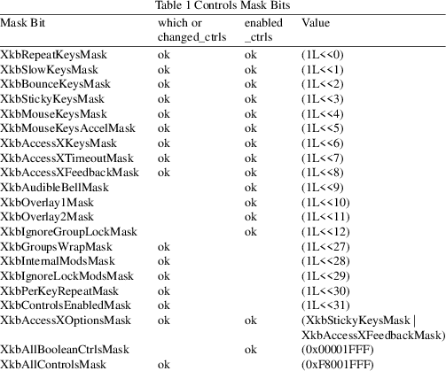

XkbChangeEnabledControls − Manipulates the EnabledControls control
|
Bool XkbChangeEnabledControls |
(Display *dpy, unsigned int device_spec, |
unsigned int mask, unsigned int values);
|
dpy |
connection to X server |
device_spec
keyboard device to modify
|
mask |
1 bit -> controls to enable / disable |
|||
|
values |
1 bit => enable, 0 bit => disable |
The EnabledControls control is a bit mask where each bit that is turned on means the corresponding control is enabled, and when turned off, disabled. It corresponds to the enabled_ctrls field of an XkbControlsRec structure (see STRUCTURES). The bits describing which controls are turned on or off are defined in Table 1.
Table 1 shows the actual values for the individual mask bits used to select controls for modification and to enable and disable the control. Note that the same mask bit is used to specify general modifications to the parameters used to configure the control (which), and to enable and disable the control (enabled_ctrls). The anomalies in the table (no "ok" in column) are for controls that have no configurable attributes; and for controls that are not boolean controls and therefore cannot be enabled or disabled.

The mask parameter specifies the boolean controls to be enabled or disabled, and the values mask specifies the new state for those controls. Valid values for both of these masks are composed of a bitwise inclusive OR of bits taken from the set of mask bits in Table 1, using only those masks with "ok" in the enabled_ctrls column.
If the X server does not support a compatible version of Xkb or the Xkb extension has not been properly initialized, XkbChangeEnabledControls returns False; otherwise, it sends the request to the X server and returns True.
Note that the EnabledControls control only enables and disables controls; it does not configure them. Some controls, such as the AudibleBell control, have no configuration attributes and are therefore manipulated solely by enabling and disabling them. Others, however, have additional attributes to configure their behavior. For example, the RepeatControl control uses repeat_delay and repeat_interval fields to describe the timing behavior of keys that repeat. The RepeatControl behavior is turned on or off depending on the value of the XkbRepeatKeysMask bit, but you must use other means, as described in this chapter, to configure its behavior in detail.
|
True |
The X server supports a compatible version of Xkb. | ||
|
False |
The X server does not support a compatible version of Xkb or the Xkb extension has not been properly initialized. |
The XkbControlsRec structure is defined as follows:
#define
XkbMaxLegalKeyCode 255
#define XkbPerKeyBitArraySize ((XkbMaxLegalKeyCode+1)/8)
typedef struct
{
unsigned char mk_dflt_btn; /* default button for keyboard
driven mouse */
unsigned char num_groups; /* number of keyboard groups */
unsigned char groups_wrap; /* how to wrap out-of-bounds
groups */
XkbModsRec internal; /* defines server internal modifiers
*/
XkbModsRec ignore_lock; /* modifiers to ignore when
checking for grab */
unsigned int enabled_ctrls; /* 1 bit => corresponding
boolean control enabled */
unsigned short repeat_delay; /* ms delay until first repeat
*/
unsigned short repeat_interval; /* ms delay between repeats
*/
unsigned short slow_keys_delay; /* ms minimum time key must
be down to be ok */
unsigned short debounce_delay; /* ms delay before key
reactivated */
unsigned short mk_delay; /* ms delay to second mouse motion
event */
unsigned short mk_interval; /* ms delay between repeat mouse
events */
unsigned short mk_time_to_max; /* # intervals until constant
mouse move */
unsigned short mk_max_speed; /* multiplier for maximum mouse
speed */
short mk_curve; /* determines mouse move curve type */
unsigned short ax_options; /* 1 bit => Access X option
enabled */
unsigned short ax_timeout; /* seconds until Access X
disabled */
unsigned short axt_opts_mask; /* 1 bit => options to
reset on Access X timeout */
unsigned short axt_opts_values; /* 1 bit => turn option
on, 0=> off */
unsigned int axt_ctrls_mask; /* which bits in enabled_ctrls
to modify */
unsigned int axt_ctrls_values; /* values for new bits in
enabled_ctrls */
unsigned char per_key_repeat[XkbPerKeyBitArraySize]; /* per
key auto repeat */
} XkbControlsRec, *XkbControlsPtr;